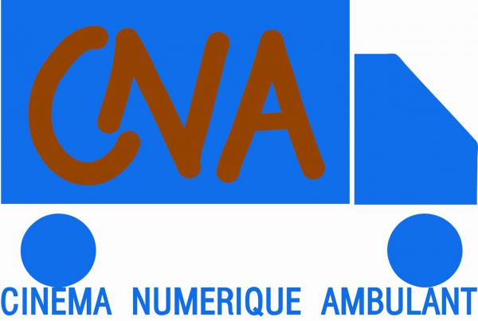

Communication & stratégie
Storytelling, création de contenus, présence digitale, animation de communautés et valorisation de projets.
Chargé de communication
Qui suis-je ?
Chargé de communication · Créateur de contenu · Scénariste · Humoriste · Gestion de projet · Athlète · Scout · Développeur web
Je transforme les idées en histoires, les histoires en projets et les projets en solutions concrètes. À la croisée de la communication, de l’art, de l’audiovisuel et du numérique, je conçois des initiatives créatives à impact culturel et social.
Créatif polyvalent basé à Kara, je réunis les sciences du langage, la communication, l’expression artistique et les outils numériques. Mon fil conducteur : raconter des histoires, mobiliser les personnes et faire émerger des projets qui répondent à des besoins réels.
Storytelling, création de contenus, présence digitale, animation de communautés et valorisation de projets.
Humour, écriture de sketches et de scénarios, jeu d’acteur, cinéma, photographie et organisation culturelle.
Développement web, conception numérique, entrepreneuriat social et initiatives liées aux Objectifs de développement durable.
Savoir-faire
Des compétences complémentaires que je mobilise selon les objectifs, les publics et les réalités de chaque projet.
Engagements & collaborations
Formations, initiatives artistiques et engagements qui ont contribué à mon parcours.



Expérience & formation
Un parcours transversal, entre formation universitaire, compétences numériques, création artistique et engagement communautaire.
Formation en linguistique et étude des langues. Travail de recherche consacré à la variation diastratique dans la langue n’cam.
Formation en développement web et mobile dans le cadre du programme D-CLIC accompagné par l’Organisation internationale de la Francophonie.
Certification en support informatique et approfondissement des compétences techniques.
Participation à des initiatives de formation numérique, dont 10000Codeurs, avec un intérêt pour la cybersécurité, les systèmes et l’innovation.
Création et interprétation de sketches, scénarisation et participation à des projets audiovisuels, notamment comme éclairagiste, figurant et acteur selon les productions.
Contribution à des initiatives communautaires et à « Fier des ODD », autour de la sensibilisation, de l’environnement et de l’entrepreneuriat vert.
Sélection de réalisations
Quelques initiatives qui illustrent ma manière de relier création, entrepreneuriat, numérique et engagement.
Concept de service de lavage automobile digitalisé, avec une approche centrée sur la réservation, la qualité de service et l’expérience client.
Explorer le projet ↗Initiative dédiée à la scène humoristique à Kara : stand-up, écriture, observation sociale et humour engagé.
Parler du projet ↗Initiative de sensibilisation aux Objectifs de développement durable, combinant mobilisation citoyenne, plantation d’arbres et entrepreneuriat vert.
En savoir plus ↗Concept de plateforme communautaire pour partager des créations artistiques et recevoir des retours de pairs, de mentors et d’outils d’IA.
Échanger sur l’idée ↗Projet de contenu audio et vidéo pensé autour des récits personnels, des échanges et des expériences qui peuvent inspirer d’autres personnes.
Collaborer ↗Participation à des projets de fiction et de création audiovisuelle, avec un intérêt particulier pour la narration, les personnages et les réalités sociales.
Découvrir mon univers ↗Profil professionnel
Communication · Création de contenu · Audiovisuel · Développement numérique. Utilise l’option d’impression de ton navigateur pour enregistrer cette page en PDF, ou contacte-moi pour recevoir un CV ciblé selon l’opportunité.
Entrons en contact
Ouvert aux opportunités en communication, aux collaborations artistiques et audiovisuelles, aux projets numériques et aux initiatives à impact.
Kara, Togo · Communication · Art & culture · Audiovisuel · Numérique